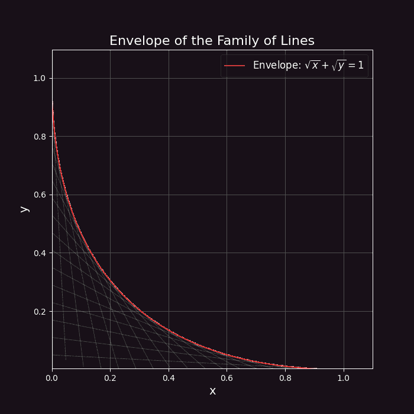
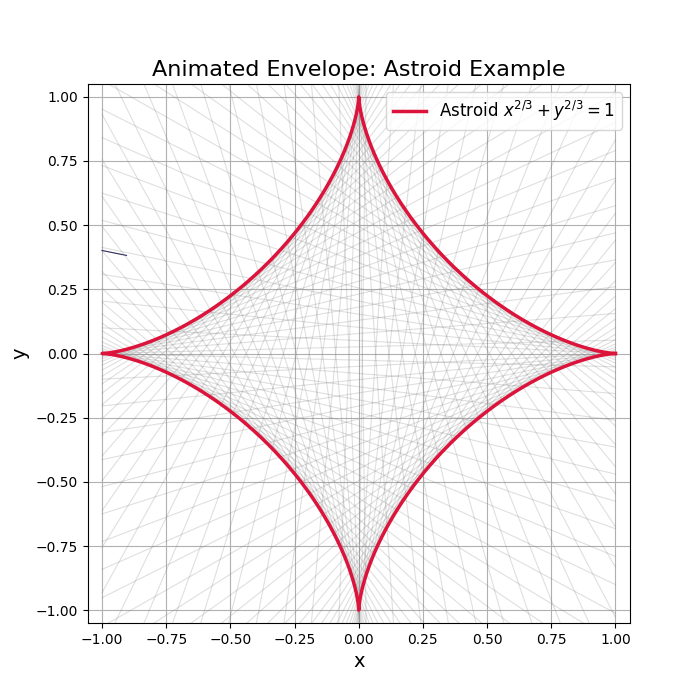

For the lines
solving \( \varphi=0 \) together with \( \partial\varphi/\partial c=0 \) gives \( x=c^{2},\; y=(1-c)^{2} \):
The envelope is tangent to every line of the family — the picture is classic string art.


For unit segments sliding with their ends on the axes,
the same procedure yields \( x=\cos^{3}\alpha,\; y=\sin^{3}\alpha \) — the astroid \( x^{2/3}+y^{2/3}=1 \).